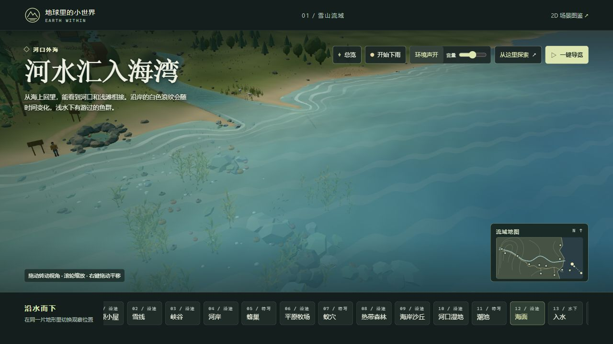
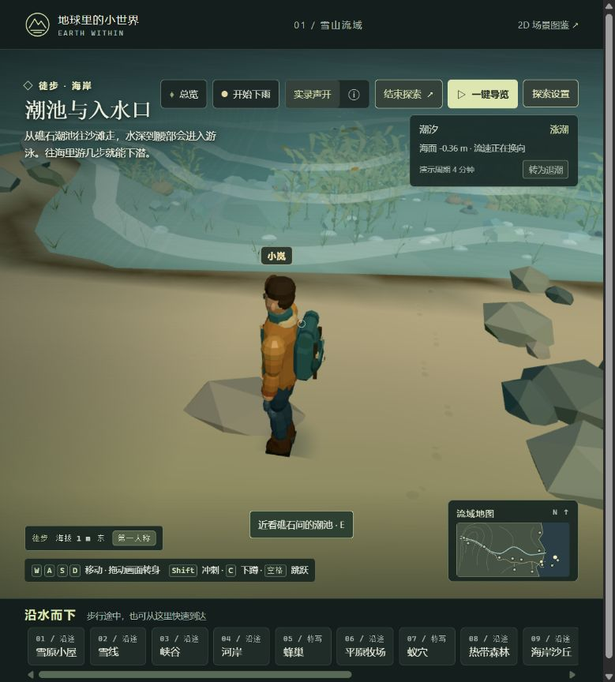

研究方向
构建可行走、可近看、可讲解的连续自然世界，让人物动作与天气、水文、生命、材质和声音互相对应。
连续生态世界与痕迹记忆研究
以小岚为中心，把地形、水流、生命和天气接成一段可以亲自走过的旅程。脚印会干，雨水会涨，动物会避让；每个地方都有值得停下来看一看的细节。

我们的理解
从“雪地、海洋、蚁穴还能有哪些”出发，我们逐步把注意力放到场景之间的连续性、人的行动，以及行动留下的变化。
构建可行走、可近看、可讲解的连续自然世界，让人物动作与天气、水文、生命、材质和声音互相对应。
从雪山徒步到河口再下潜；雨洪与潮汐改变水深和游速，动物避让，衣物湿润，湿脚印干后留下凹痕。
把自然因果变成体验，把“我来过”变成痕迹；沉淀可复用交互方法。教育、情绪与商业收益仍需真实使用验证。
场景之间需要地势、水源、河道和岸线解释；蜂巢与蚁穴也要依附于可抵达、可观察的具体地方。地理与气候尺度经过压缩，目的是串联体验。
用户能走、跑、蹲、跳、涉水、游泳和下潜。导览沿途行进，讲解时仍可转动镜头，按键接管；动作、碰撞和声音要对应同一次行为。
雨不仅是粒子：它改变水流、浑浊度、水位、积水、动物和声景。水流也不只是贴图：它影响游速、鱼群、漂叶与绕流。
带水上岸的脚印逐步变浅，湿色消退后仍有凹痕。风、雨和潮水改变“我来过”的证据，使时间和陪伴感有可见载体。

已有引导图 · 原样复用
图中用实机截图对应效果，用共享状态解释实现，再列出价值、扩展路线和局限。已实现能力与未来设想分开说明。
原图哈希与发布清单公开保留。图中 F 盘空间提示记录制作时的本机状态；线上访问不依赖该磁盘。
效果与实际体验
下列图片来自项目运行截图。每项保留观察入口，可以从研究描述直接进入对应地方。
同一串脚印 · 同一视角
水分减少，湿色会褪去；凹痕和鞋底纹路继续存在，直到被风、雨或潮水改变。场景保存剩余湿度与深度，重新打开后接着变化。凹陷通过材质和法线呈现，不改变人物碰撞地形。
走入海水，再回岸上观察
如何实现
使用 Three.js / WebGL 2 与原生 JavaScript。场景、材质、人物、声音和导览由模块组织；原始本地 Node 服务与测试源码随研究保留。
水位 / 水深 / 局部流速 / 地面、衣物与靴底湿度 / 痕迹深度与纹路
落脚、入水冲击、手臂拍水等事件，同时驱动视觉、声音和环境反馈。
地形高度与材质、雨量与遮蔽、径流与潮位共同给出水深、流速和湿度。人物、动物、材质、声音读取相同结果，减少彼此矛盾。
world.js / world-terrain / world-weather / world-tides低岸连通与地形决定淹没；雨洪与潮位分开计算。障碍物的迎流减速、两侧分流和背水回流用局部近似叠加，人、鱼和漂叶共用。
world-water / world-flow / world-drainage / world-puddles行走、涉水、游泳、下潜和动作切换跟随水深；靴底接触、落地、拍水和入水事件同时触发粒子、脚印、声音与鱼群响应。
world-walk / world-hero / world-water-actions / world-collision地面、衣裤与左右靴底分别存水；脚印中心水分、边缘水分、凹痕深度、纹路清晰度独立计算，风雨与淹水时长改变结果。
world-ground-memory / world-wetness / world-footprints / world-footprint-aging4段CC0实录分别混合平缓河流、急流、海浪与风。距离、天气与遮蔽连续改变音量和滤波；水下低通，旁白压低环境声。15站MiniMax录音随公开版发布。
world-ambience / world-audio / world-guide / voice.mjs重复元素实例化，脚印和粒子固定容量复用；每5秒和离页保存，恢复检查安全位置。后台暂停，自动画质按持续帧耗时调节分辨率。
world-session / world.js / 各效果缓冲模块本地版的 MiniMax 旁白由 Node 服务合成，并按文本、模型、音色、接口与设置缓存。公开版把经过长度与 SHA-256 校验的 15 段缓存音频导出为 MP3，转用静态资源；不包含 API 密钥、.env、原始缓存容器或用户存档。
发布脚本把根路径资源改为子目录可用的相对路径，包含 Three.js 与 OrbitControls 运行文件、四段实录和授权。GitHub Pages 从 main 分支 docs 目录部署，研究首页、3D 演示和二维图鉴分别保留入口。
价值与可复用能力
已经形成可操作的技术与内容基础；下面是应用潜力，不能代替用户、学习和商业结果的验证。
把“下雨—涨水—动物避雨—退水留痕”的关系变成可亲历的观察，而不只是知识说明。可用于自然课堂、亲子探索与数字展陈。
人物建立中心，足迹证明到来，痕迹的干燥和消失让时间被看见。可继续研究人的探索动机、陪伴感与地方记忆。
共享状态、触地事件、近看镜头、可接管导览、音频缓存和快照恢复可被拆出，用于别的互动世界与教学原型。
自由探索、讲解、图鉴和可配置观察点能组合成不同内容载体。学习效果、长期使用、效率节约、付费和商业收益尚未测量。
场景分类与二维图鉴 → 从雪山到海底的连续路线 → 小岚与可接管导览 → 走跑蹲跳、游泳与碰撞 → 动物避让与特写 → 雨洪、潮汐与真实环境声 → 衣物湿润、脚印干燥与痕迹记忆。
每轮都来自具体体验中的不合理之处：人物倒退、横移、穿模、海底姿态、河口衔接、平缓水声和看不见的湿润反馈。修正局部问题，也逐步形成统一的世界理解。
继续研究的方向
复杂天气/潮位组合、长时实机运行、恢复存档、音频失败和写入退化；保证雪线到海底确实能连续走通。
精修走跑转向、坡地与出入水衔接；按人物/动物体型复核碰撞，在不同视角验证避障。
完善惊逃与返回、鱼群转向、鸟落地及巢穴内部；把可近看的地方做具体，而不单纯增加数量。
多层水体、泡沫、岸线浪与泥沙输移；评估可变形地表和更大痕迹容量的表现价值与性能代价。
昼夜、季节、融雪、天气过渡；扩展洞穴、沙漠和深海，配合分区加载与合理生态分布。
图鉴任务、拍照、观测记录、多语言旁白、移动操作、无障碍及存档导出；先通过真实使用再扩充。
证据与完成边界
天气、涨退水、人物、脚印、动物、河口与全路线镜头/碰撞等。检查数量说明覆盖，不直接证明美术品质。
6000 帧，场景对象数 1000 → 1000，粒子与痕迹保持固定容量。这不是实机帧率测试。
查看原始记录引导图原样复用；湿/干脚印来自同一视角。旁白从已有缓存导出，静态版无需运行时密钥。
查看发布清单